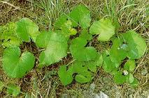

Tussilage ou pas d'âne

Tussilage ou pas d'âne (Tussilago farfaro de la famille des Astéracées)
Très peu toxique
Partie toxique pour les chats en général et le Korat en particulier :
Toute la plante.
Symptômes du processus pathologique :
Des dommages au foie sont à prévoir uniquement en cas d'ingestion de grandes quantités.
Origine de la toxicité (principe actif) :
Cristaux d'oxalate de calcium.